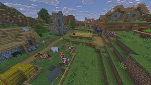
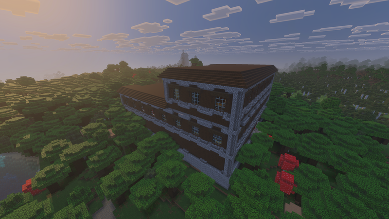
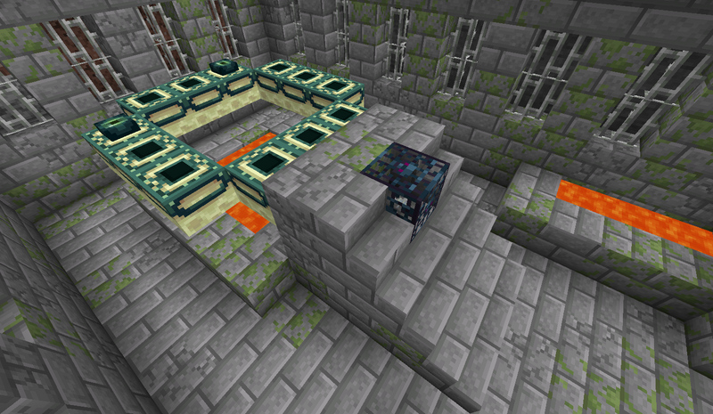
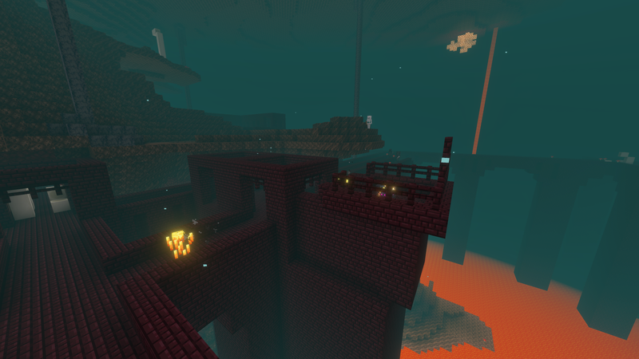
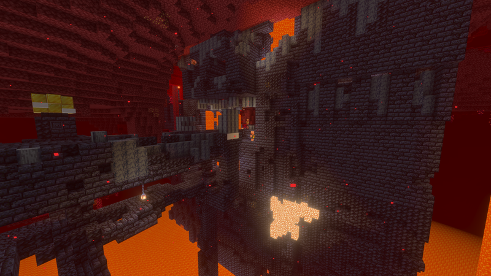
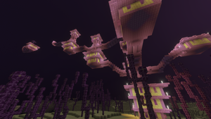

Village
Villages can be found in several different biomes in the overworld. They contain houses, farms, and villagers.
Minecraft contains many structures that can be discovered while exploring the different biomes/dimensions in Minecraft. Some of the structures contain valuable loot, resources, and enemies.

Villages can be found in several different biomes in the overworld. They contain houses, farms, and villagers.

Woodland Mansions are large structures that can be found in dark forest biomes. They are home to multiple hostile mobs.

Strongholds are underground structures that contain an End Portal. This is the only way for a player to travel to the End dimension.

Nether Fortresses are structures made of nether bricks. They contain many different hostile mobs. They also contain valuable resources.

Bastions are large structures inhabited by Piglins. These structures also contain valuable resources.

End Cities are large structures found on the outer island of the End. These End Cities contain valuable loot and is the only structure where a player can obtain an Elytra.